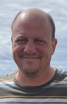

James Leight | WDD 130

I live in Torrance, California. I have lived in California for 35 years after I moved here to go to graduate school at USC. I enjoy walking, hiking, running, and cycling. I walk my two dogs every day around Madrona Marsh. It is great excersise for the dogs and they look for lizards and critters to attack. I try to run frequently in my neighborhood and town when my planter facia is not bothering me. I cycle to work regularly and am trying to do more agressive cycling; but I had a recent fall and and am nearly recovered from that. I try to run plenty of 5k runs and have run some half- marathon trail races. I also love to snowboard and camp in the great outdoors. I learned to snowboard years ago so I could do it with my son who was young at the time. Now we snowboard together when we can. He goes to school near Brian Head and that is a great place to snowboard when there is adequate snow. I volunteer as a Scoutmaster for a local BSA troop. We have a very small number of scouts, but have fun camping in the local mountains. We have attended scout camp on Catalina Island many times and last summer did a week at the BSA Seabase in the Florida keys. Currently, I serve as the Elders Quorum President in my ward, the Torrance 1st Ward, in the Palos Verdes Stake.